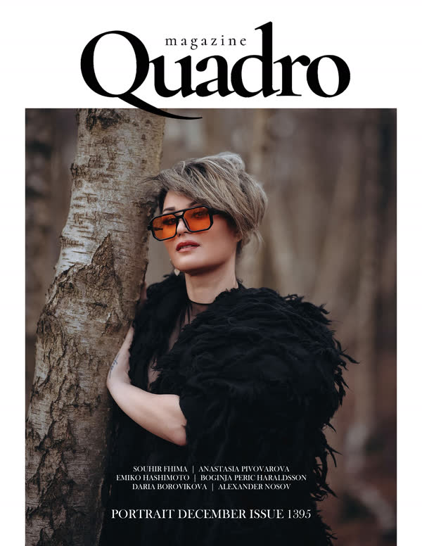
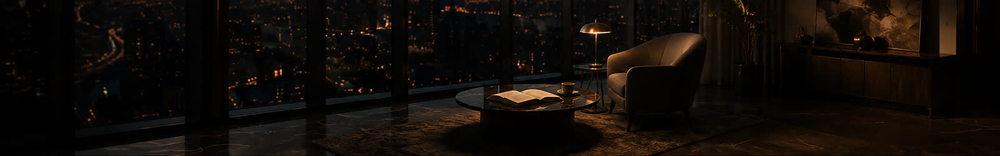

BeyondVisibility.
— Into Memory.
Dar SF is a creative studio dedicated to shaping perception through storytelling, design, and experience. Working at the intersection of luxury, culture, and innovation, we create visual worlds that inspire emotion, elevate presence, and leave a lasting impression. Because the most memorable brands are not built through visibility alone.
They are remembered through feeling.
Explore Dar SF


Created For Those Building More Than Brands.
We collaborate with brands, founders, and destinations who understand that luxury is not created through appearance alone. It is shaped through atmosphere, meaning, and the experiences people carry with them long after the moment has passed.
- 01 Boutique Hotels Luxury hotels, boutique properties, retreats, and destination experiences designed to create memorable guest journeys.
- 02 Luxury Hospitality Concepts Restaurants, private clubs, hospitality groups, and experience-led venues shaping modern luxury culture.
- 03 Wellness & Spa Brands Wellness destinations, spas, retreats, and wellbeing concepts focused on transformation, balance, and elevated experiences.
- 04 Beauty & Aesthetic Clinics Aesthetic clinics, cosmetic practitioners, skincare brands, and beauty businesses seeking premium positioning.
- 05 Luxury Lifestyle Brands Fashion, jewellery, interiors, luxury products, and lifestyle brands built around aspiration, craftsmanship, and identity.
- 06 Editorial & Fashion Campaigns Editorial productions, fashion brands, creative collaborations, and campaigns where storytelling and visual impact matter.
- 07 Elevated Travel Experiences Luxury travel concepts, curated journeys, private experiences, and destination-led brands.

Beyond Visibility. Into Memory.
They exist in atmosphere, emotion, perception, and the experiences people carry with them long after the moment has passed.
Dar SF brings together creative intelligence, visual storytelling, and strategic thinking to craft brands and experiences designed to inspire, connect, and endure.
The most powerful expressions of luxury are often invisible.

A curated collection of visual stories and brand experiences shaped through atmosphere, perception, and creative intelligence.
Where Vision Earns Recognition.
Featured across international editorial publications celebrating visual storytelling, creativity, and contemporary culture.

Cover Features — Artego · Artego · Quadro
The Dar SF Journal
Perspectives on luxury, creativity, hospitality, branding, and the evolving relationship between culture, technology, and human experience.
A curated collection of essays, observations, and creative reflections exploring the invisible elements that shape perception, emotion, and lasting brand value.
The Invisible Luxury
What truly makes an experience unforgettable? Exploring the intangible elements that transform products, spaces, and brands into lasting memories.
Read ArticlePeople rarely remember what they saw. They remember how they felt. Souhir Fhima — Founder, Dar SF
Curated Perspectives. Delivered Occasionally.
Receive thoughtful insights exploring luxury, creativity, hospitality, branding, innovation, and the future of experience.

Let’s Create Something Worth Remembering.
Whether developing a hospitality destination, a wellness concept, an editorial campaign, or a refined digital experience, every memorable story begins with a clear vision.
Start a Project